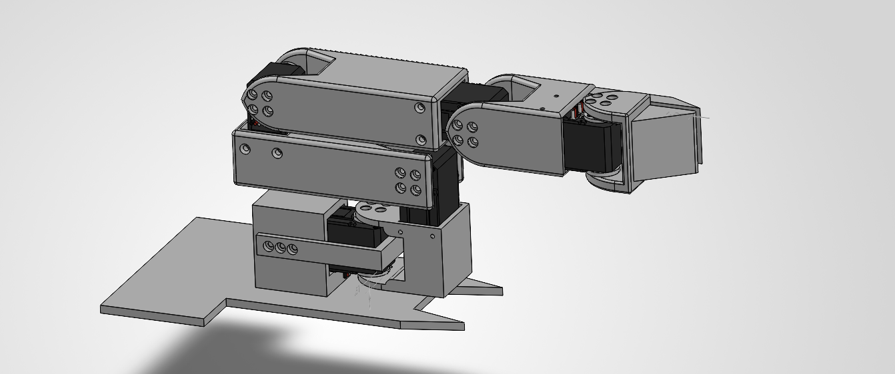
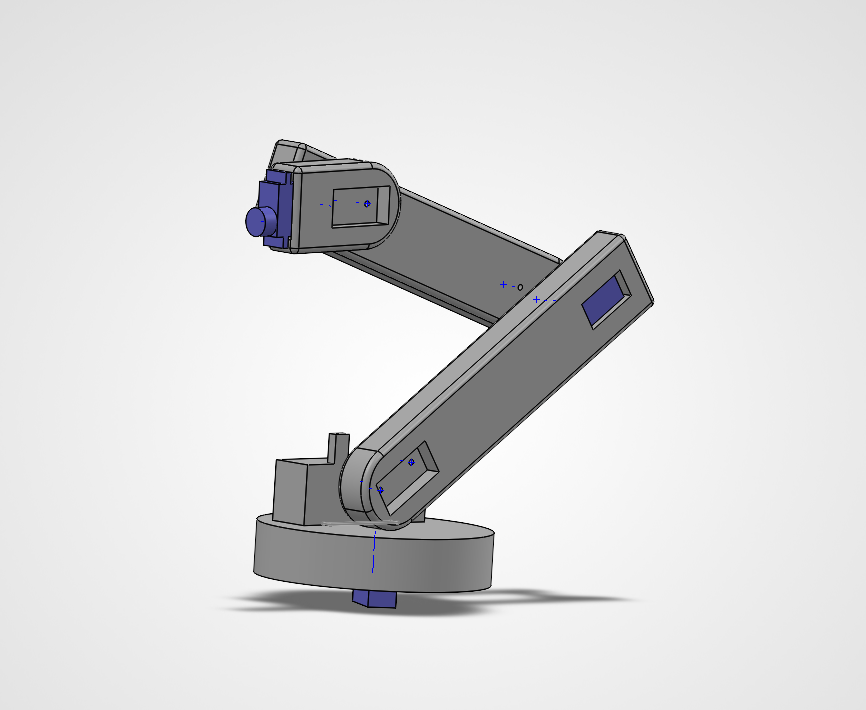
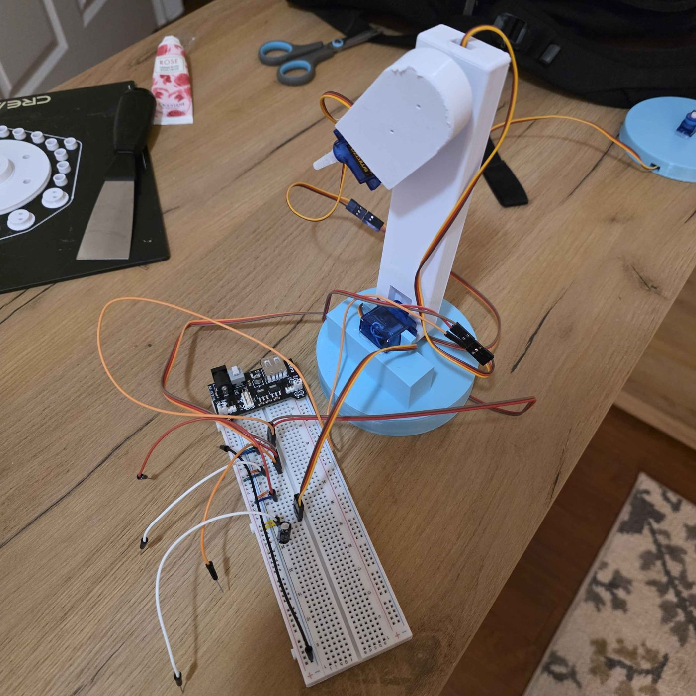
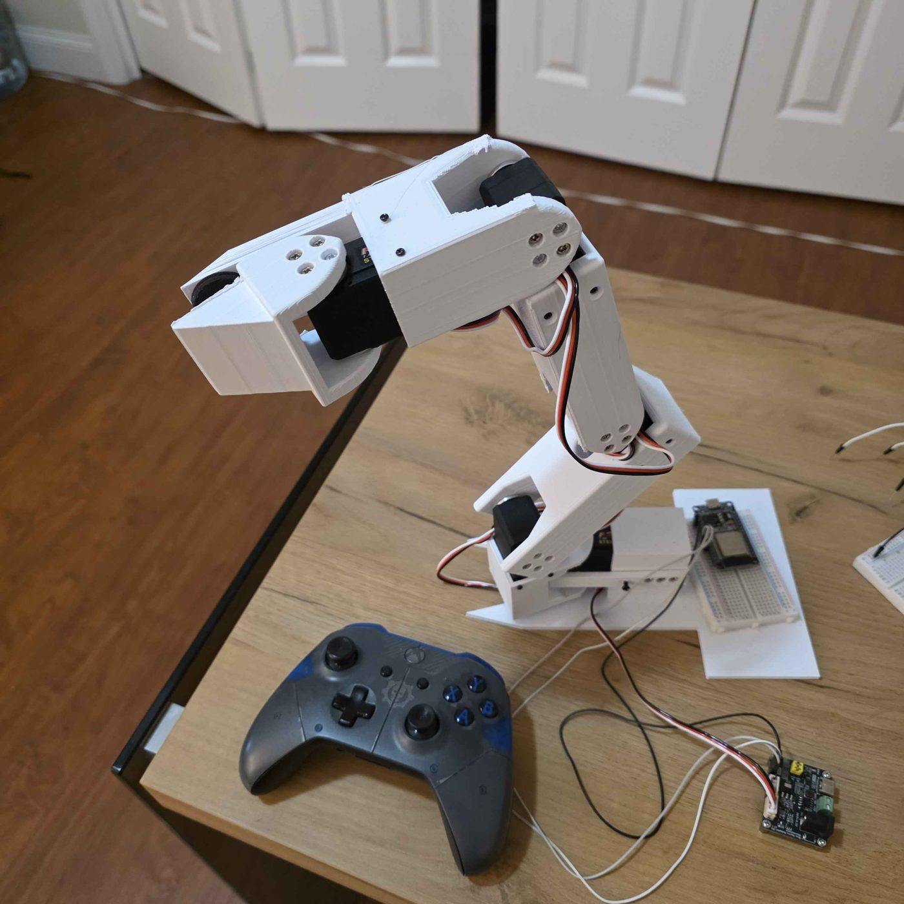
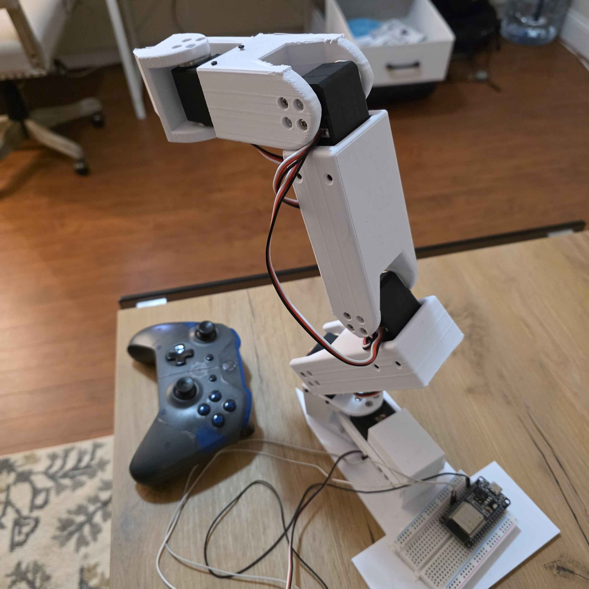
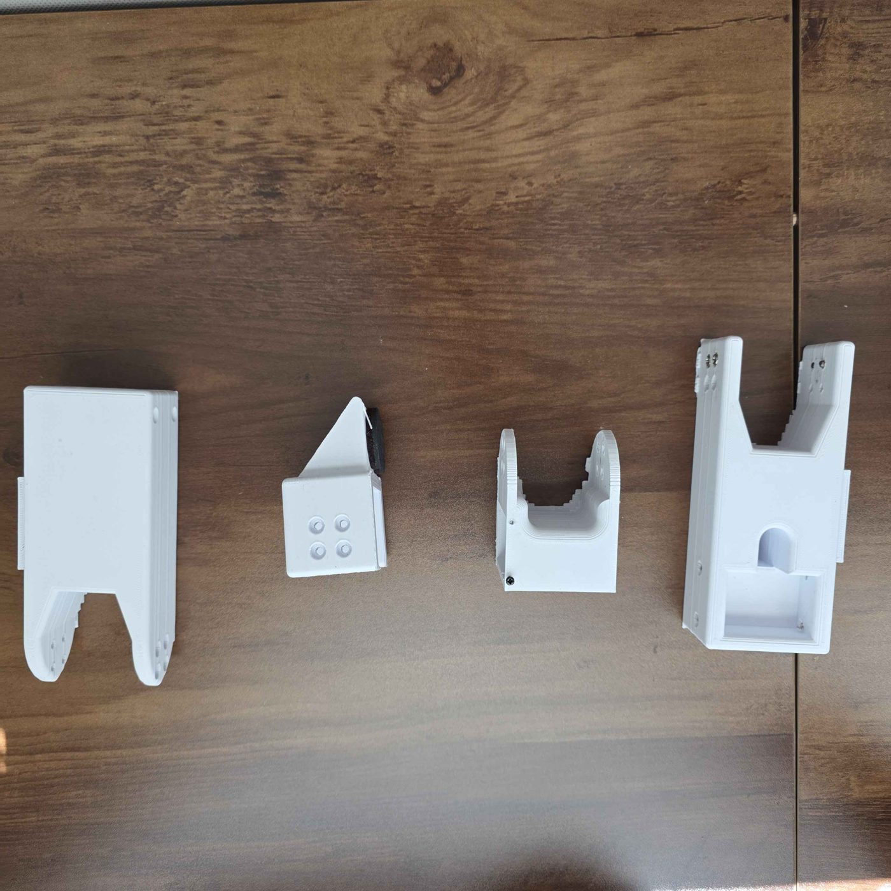

Every part of the arm was modeled in SolidWorks before anything was printed or assembled — working out joint clearances, mounting points, and how each link would connect to the next.


The first version was a single-joint test rig, built to practice wiring
and control code before committing to the full arm. It ran on standard
hobby servos driven by an Arduino, controlled directly from the Serial
Monitor, typing a joint letter and an angle (for example, b90
to send the base to 90°) moved that joint to the given position.


The second version moved to a full multi-joint arm built around STS3215 bus servos, controlled from an ESP32 over Bluetooth using an Xbox controller. The sticks and triggers map to each joint, with a few safeguards built into the control code:

Getting the joint housings right took a few print iterations — dialing in tolerances and mounting points before arriving at the parts used in the final build.
